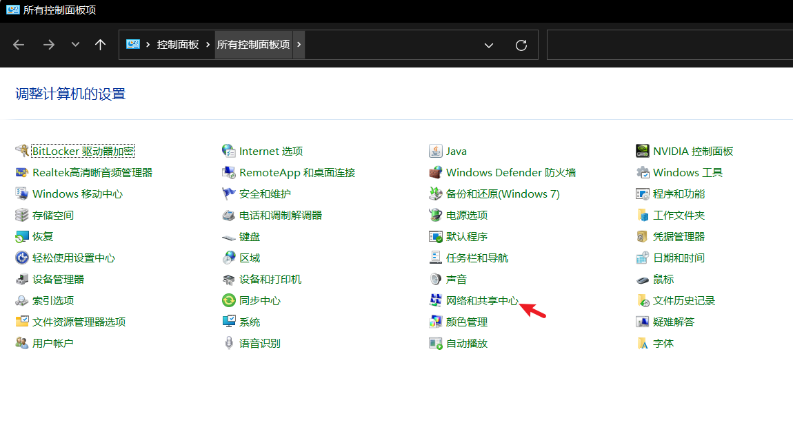
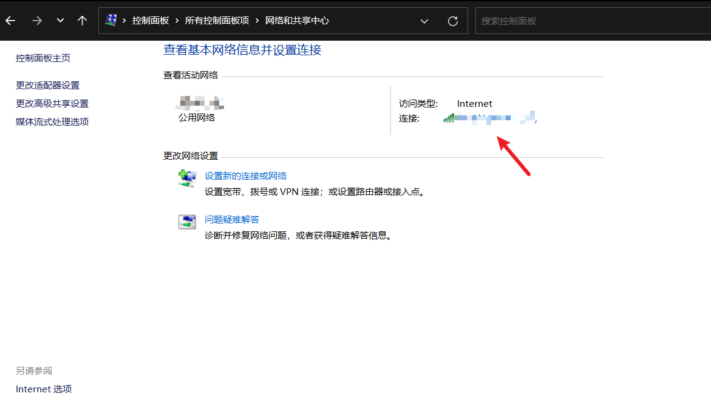
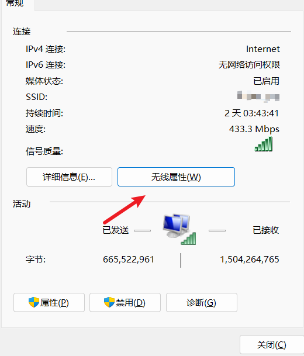
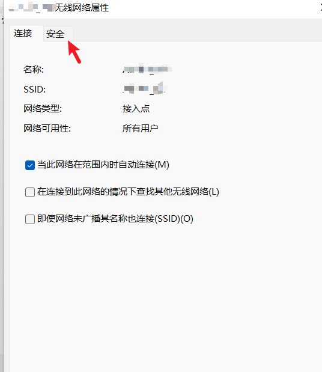
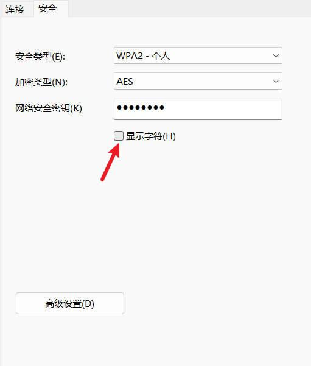
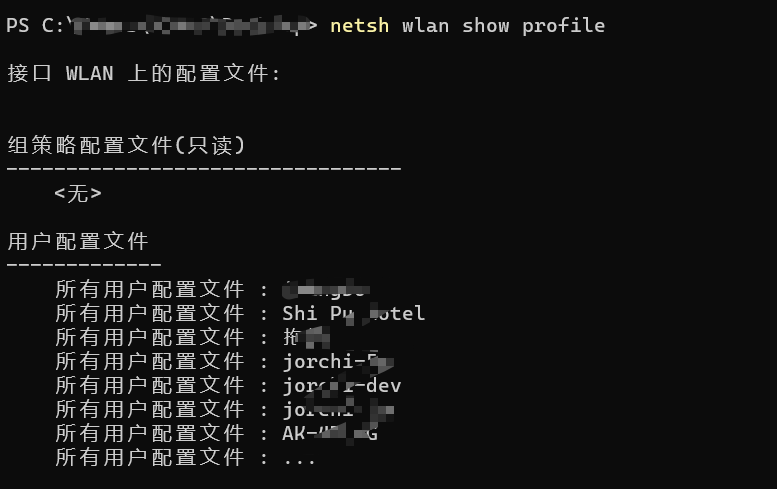
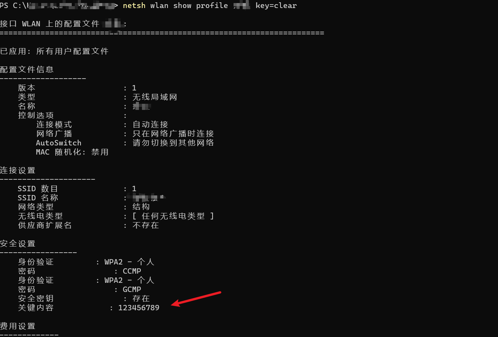

在某些情况 当你获取到一台个人笔记本的权限以后 需要获取本地已连接过的wifi密码。有以下两种方式：
1、控制面板–>网络与共享中心–>选择已连接的wifi–>无线属性–>安全–>显示字符 即可获取到目前已连接的wifi密码。





2、windows命令行下获取wifi密码
首先打开dos窗口、键入
1
2
3
4
5
| netsh wlan show profile //获取wlan的用户配置文件
netsh wlan show profile "SSID（WIFI的名字）" key=clear //获取指定WIFI的配置文件 里面包含wifi密码
补充netsh 其他命令:
netsh wlan show network mode=bssid //此命令将显示您所在区域的所有可用 WiFi 网络
netsh wlan connect name=(wifi name ) //连接指定名称的wifi
|


之后会附上简易bat脚本不完整版(技术太菜大佬勿喷！)—
1
2
3
4
5
6
7
8
| @echo off
echo ==========Get BSSID==========
netsh wlan show profile
echo plaese input BSSID... & pause >nul
set /p bssid=
echo loading....
netsh wlan show profile %bssid% key=clear | findstr "关键内容" > password.txt && type password.txt
pause
|